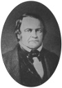

Binlerce Amerikalı için 22 Ekim 1844 tarihi çok özel bir gündü. Vermont’lu bir vaiz olan William Miller’a (1782–1849) göre bu tarihte İsa Mesih dünyaya gelecek ve kıyamet kopacaktı.

Miller 1812 Savaşı’nda gazi olmuştu. Eve döndükten sonra kıyamet meselesini bir takıntı haline getirdi. Eski Ahit’teki Daniel’in Kitabı’nda okuduklarından, İsa’nın 1840’larda dünyaya döneceği fikrine kapılmıştı.
1830’larda bu kehanetini açıklayan vaazlar vermeye başladı. New England ve New York’taki muhtelif gazeteler yaptıkları haberlerle onun bu öngörüsüne yer verdiler. Vaazları ve basında çıkan haberler sayesinde 1840’lı yıllara gelindiğinde çok sayıda takipçi kazanmıştı. Bir tahmine göre 100 bin inananı vardı.
Miller formel bir dini eğitim almamıştı. Tahminlerini ortaya atarken kullandığı akıl yürütme yöntemi gerçekten çok karmaşıktı. Buna rağmen özellikle New York ve New England kırsalında önemli bir takipçi kitlesine ulaşabildi. Millerizm, İkinci Büyük Uyanış Dönemi’nin en önemli dini gruplarından biri haline gelmişti. Bu dönemde İç Savaş öncesi Amerika’da önemli bir dini hareketlilik yaşanmıştı.
Miller başlarda sadece genel bir tahmin yapıyordu. Buna göre 1843 Martı’ndan sonra herhangi bir tarihte Mesih gökten inecekti. 1844 Martı herhangi bir olay yaşanmadan geçince kıyamet gününün gerçekleşeceği tarihe ilişkin tahminini 18 Nisan 1844 olarak netleştirdi. 19 Nisan’da dünya dönmeye devam ediyordu. Bunun üzerine takipçileri bu kez de 22 Ekim tarihinde kıyameti beklemeye başladılar.
Miller sadece İsa’nın dönüşü ile ilgili kehanetlerde bulunmamıştı. Ayrıca bunun nasıl olacağını da söylüyordu. Ona göre olaylar Vahiyler Kitabı’nda belirtildiği gibi olacaktı: Dünya ateşle arındırılacak, doğrular göğe yükselecek ve İsa bin yıl boyunca hüküm sürecekti.
Miller’in taraftarlarının heyecanı 22 Ekim’e doğru giderek arttı. Ancak kıyamet kopmayınca cemaatte bir kriz yaşanmaya başlandı. Miller sorunun hesap hatasından kaynaklandığını ileri sürüyordü. Fakat “Büyük Hayalkırıklığı”ndan sonra pek çok taraftarı onu terk etti. Beş yıl sonra New York’ta öldü.
Ek Bilgiler
1- Büyük Hayalkırıklığı’ndan sonra Miller’in kalan taraftarları yeni bir grup oluşturdular: Yedinci Gün Adventist Kilisesi. Yehova’nın Şahitleri de kökenini Miller’a dayandırmaktadır.
2- Miller’in kehanetinin merkezinde İncil’deki şu ifadeler yer alır (Daniel 8:14): “Ve bana dedi ki, 2300 gün sonra tapınak arındırılacak.” Miller buradaki günler ifadesinin yıllar olarak anlaşılması gerektiğini düşünüyordu. MÖ 457 yılında Kudüs’ün yeniden inşasını ise başlangıç günü olarak kabul ediyordu.
3- Miller, 1814 yılındaki Plattsburgh çarpışmasında yüzbaşı olarak görev yapmıştı. Bu muharebe, 1812’te başlayan savaşta bir dönüm noktasıydı. Uzun bir mücadelenin ardından Amerikalılar, İngilizler’i Kanada’dan çıkarmayı başarmıştı.